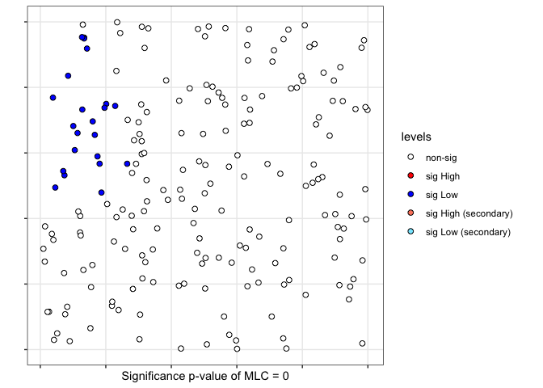

spqdata
The goal of spqdep is to provide tools for the analysis of spatial qualitative data.
Installation
You can install the released version of spqdata from CRAN with:
#install.packages("spqdata")And the development version from GitHub with:
# install.packages("devtools")
#devtools::install_github("f8l5h9/spqdata")Abstract
Qualitative spatial variables are important in many fields of research. However, unlike the decades-worth of research devoted to the spatial association of quantitative variables, the exploratory analysis of spatial qualitative variables is relatively less developed. The objective of the present paper is to present a new R-package to test for spatial dependence in categorical spatial data. Several tests have been proposed, namely, the classical joint count statistics, the Q-test based on symbolic dynamics, the Scan-test based on scan methodology and a new spatial test based on spatial-runs. All tests can be applied to categorical spatial cross-section data with two or more categories and asymptotic and bootstrap permutation distribution are implemented. The R package is completely documented, including several examples and an user-guide is available as a vignette. The package spqdep is available in CRAN and is ideal for research and teaching activities.
Example
This is a basic example which shows you how to solve a common problem
library(spqdep)
N <- 200
set.seed(1234)
cx <- runif(N)
cy <- runif(N)
listw <- spdep::knearneigh(cbind(cx,cy), k = 10)
p <- c(1/3,2/3)
rho <- 0.9
control <- list(seedinit = 1234)
fx <- dgp.spq(p = p, listw = listw, rho = rho,control = control)
scan <- scan.test(fx = fx, nsim = 199, case = "A", nv = 100, coor = cbind(cx,cy),
distr = "bernoulli", windows="elliptic")
print(scan)#>
#> Scan test. Distribution: bernoulli
#>
#> data: fx
#> scan-loglik = 12.727, p-value < 2.2e-16
#> alternative hypothesis: High
#> sample estimates:
#>
#> Total observations in the MLC = 21.00
#> Expected cases in the MLC = 103.85
#> Observed cases in the MLC = 17.00
summary(scan)#>
#> Summary of data:
#> Distribution....................: bernoulli
#> Type of cluster (alternative)...: High
#> Number of locations.............: 200
#> Cathegory case..................: A
#> Total number of observations....: 67
#> Names of cathegories............: A B
#> Total per category..............: 67 133
#> Percent per category............: 0.34 0.66
#> ---------------------------------
#>
#> Scan statistic: Most Likely Cluster
#> Total observations in the MLC........: 21
#> Names of cathegories.................: A B
#> Percent per category total...........: 0.34 0.66
#> Percent per category inside cluster..: 0.81 0.19
#> Value of statisitic (loglik ratio)...: 12.7268
#> p-value..............................: 0
#>
#> IDs of cluster detect:
#> Location IDs included...: 110 112 1 193 165 95 89 91 59 35 85 78 37 51 152 19 83 32 30 133 105
#> ---------------------------------
#>
#>
#> Secondary Cluster. Number 1
#> Total observations in secondary cluster.: 5
#> Names of cathegories.................: A B
#> Percent per category total...........: 0.34 0.66
#> Percent per category inside cluster..: 0 1
#> Value of statisitic (loglik ratio)...: 4.4561
#> p-value..............................: 0.75
#> Location IDs included................: 62 69 75 186 98
#>
#>
#> Secondary Cluster. Number 2
#> Total observations in secondary cluster.: 4
#> Names of cathegories.................: A B
#> Percent per category total...........: 0.34 0.66
#> Percent per category inside cluster..: 0 1
#> Value of statisitic (loglik ratio)...: 3.3265
#> p-value..............................: 0.975
#> Location IDs included................: 116 124 117 185
#>
#>
#> Secondary Cluster. Number 3
#> Total observations in secondary cluster.: 6
#> Names of cathegories.................: A B
#> Percent per category total...........: 0.34 0.66
#> Percent per category inside cluster..: 0.17 0.83
#> Value of statisitic (loglik ratio)...: 2.343
#> p-value..............................: 0.995
#> Location IDs included................: 38 164 43 8 88 79
#>
#>
#> Secondary Cluster. Number 4
#> Total observations in secondary cluster.: 6
#> Names of cathegories.................: A B
#> Percent per category total...........: 0.34 0.66
#> Percent per category inside cluster..: 0.67 0.33
#> Value of statisitic (loglik ratio)...: 2.343
#> p-value..............................: 0.995
#> Location IDs included................: 44 191 70 160 11 84
#>
#>
#> Secondary Cluster. Number 5
#> Total observations in secondary cluster.: 6
#> Names of cathegories.................: A B
#> Percent per category total...........: 0.34 0.66
#> Percent per category inside cluster..: 0.67 0.33
#> Value of statisitic (loglik ratio)...: 2.343
#> p-value..............................: 0.995
#> Location IDs included................: 129 177 162 56 31 77
plot(scan)